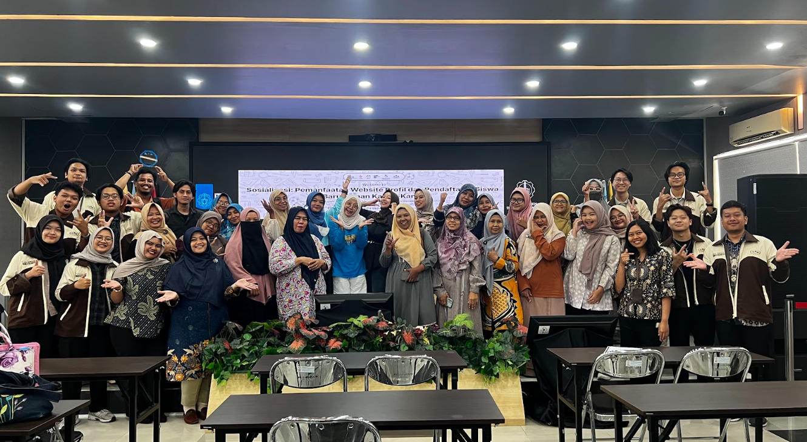
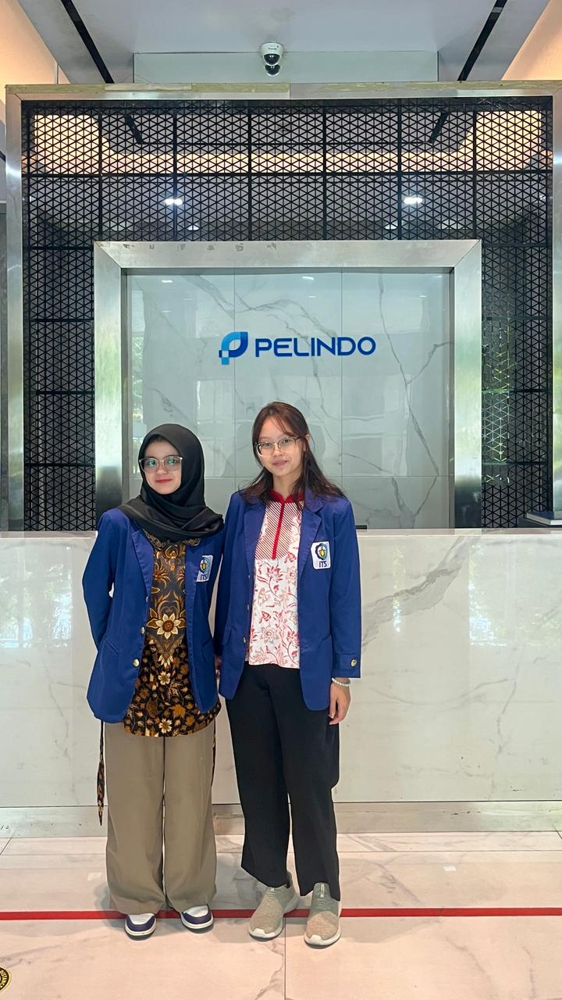
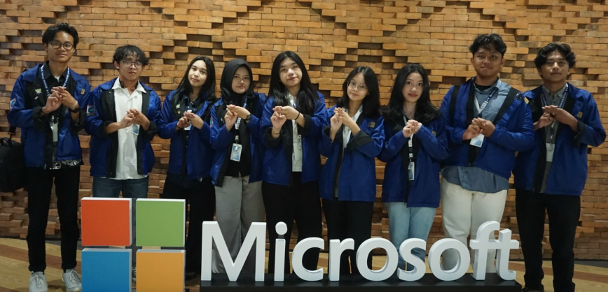
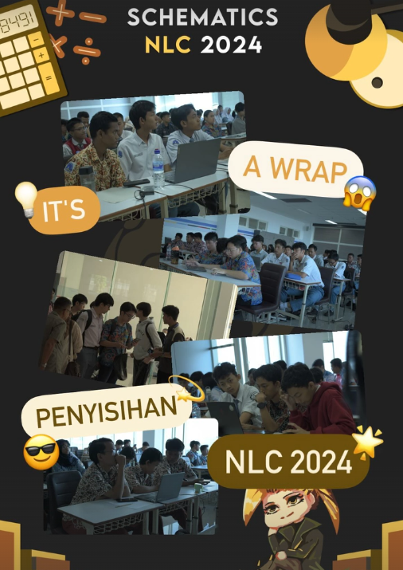
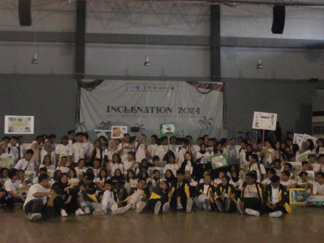
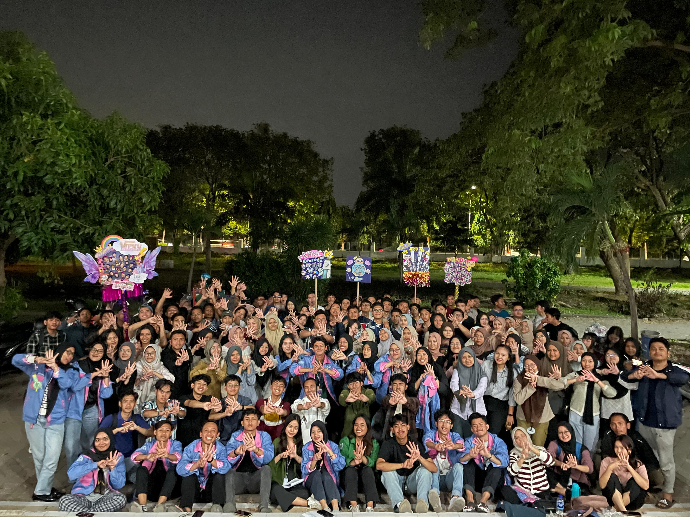

Data Analyst & AI Engineer

Information Intelligent Management Lab
Jun 2025 - Present

PT. Pelabuhan Indonesia (Persero)
Sep 2025 - Dec 2025

Himpunan Mahasiswa Teknik Computer-Informatika
Jan 2025 - Dec 2025

Schematics ITS
Jan 2025 - Nov 2025

BEM FTEIC ITS - Inclenation
Apr 2025 - Aug 2025

GERIGI ITS 2024
Jul 2024 - Aug 2024